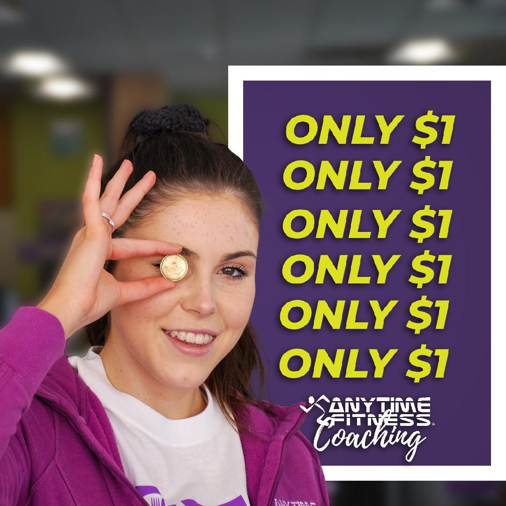
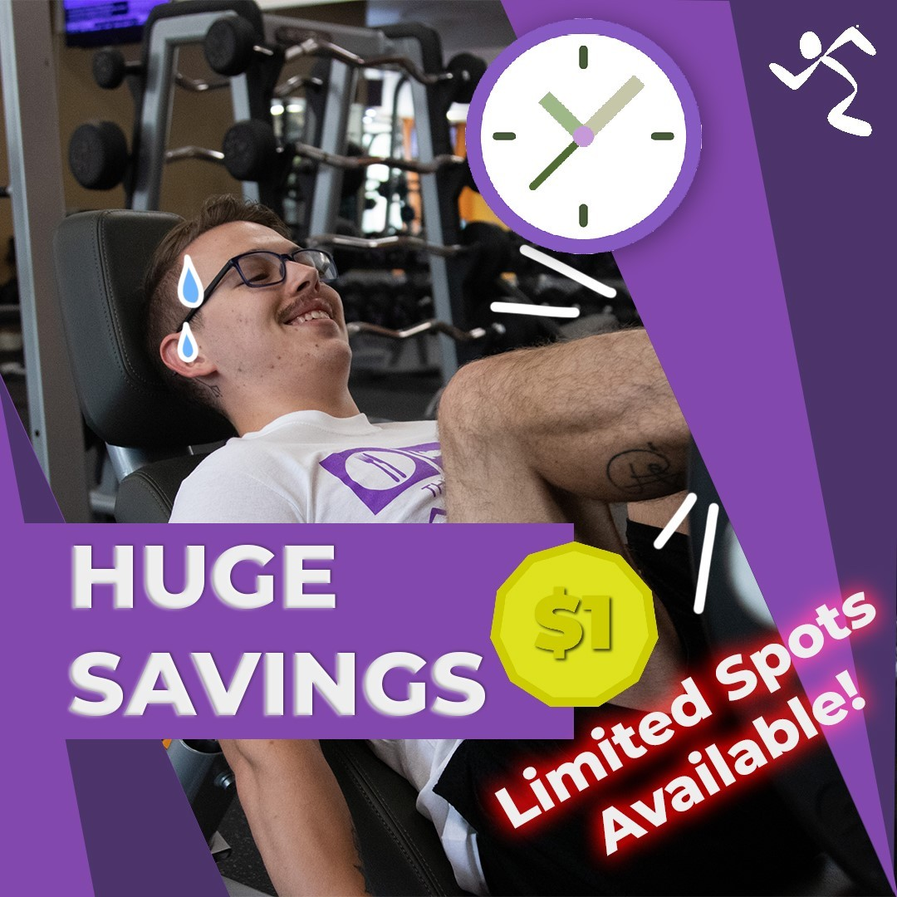
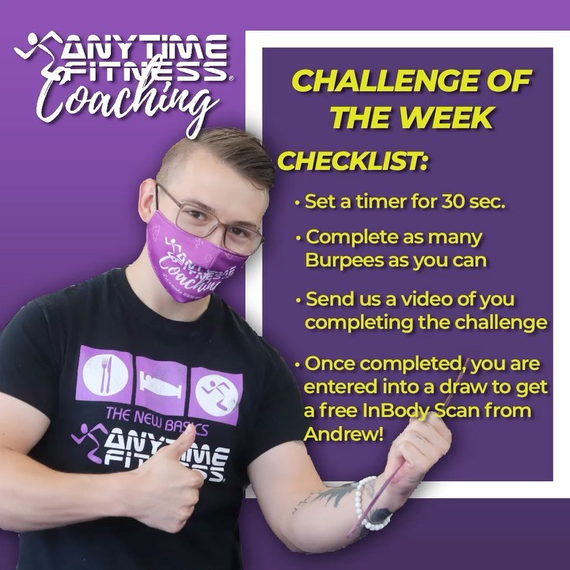
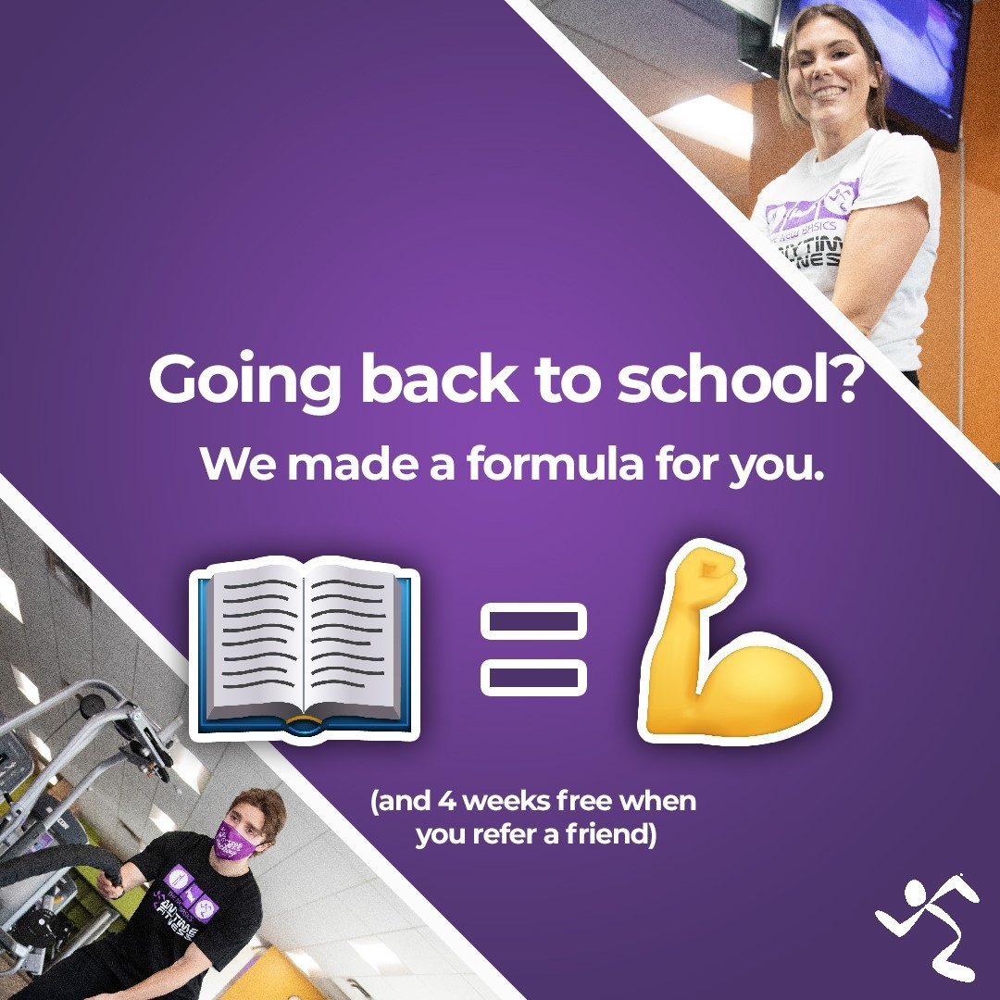
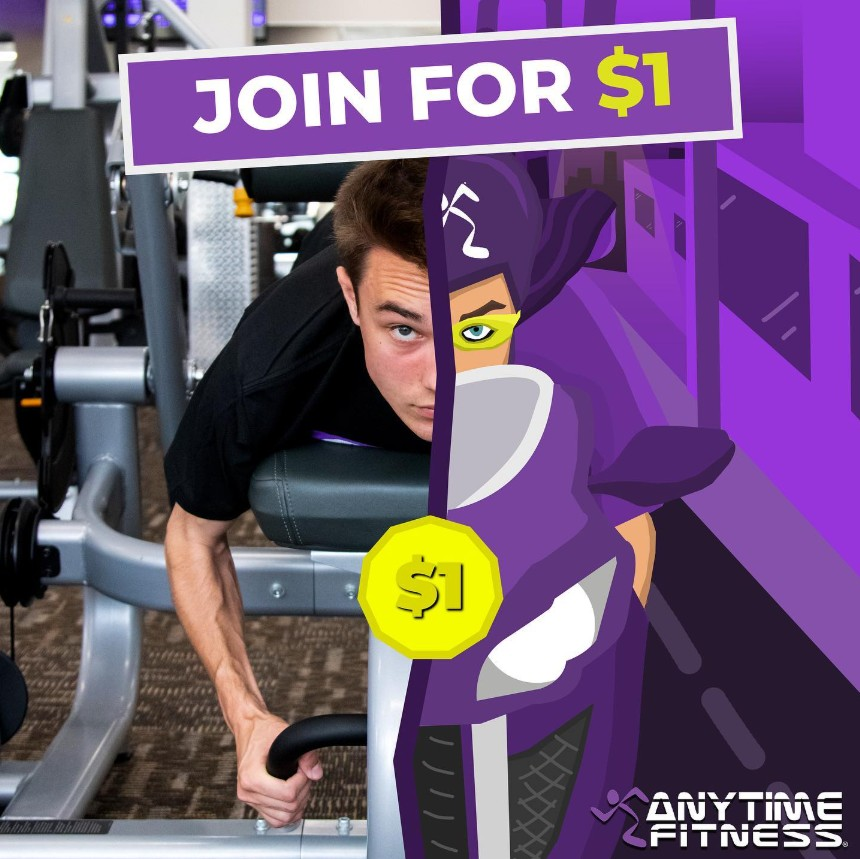
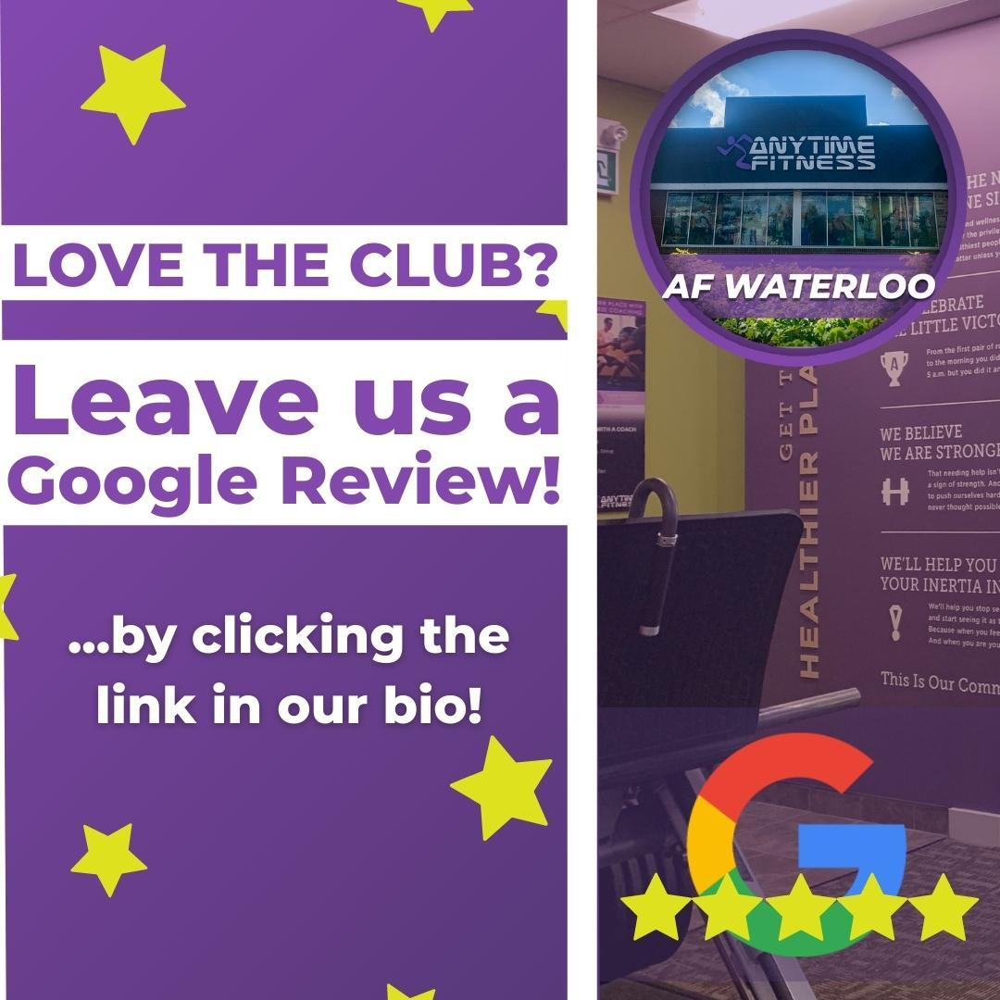
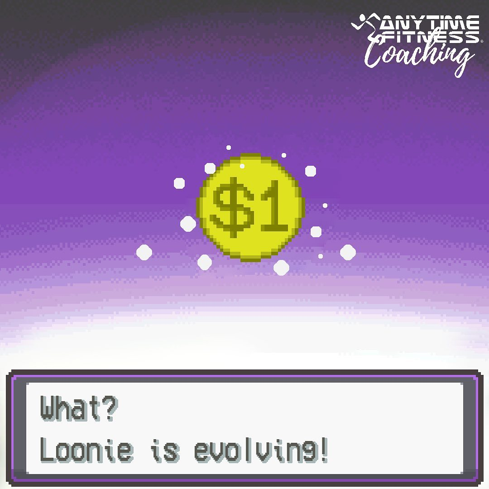
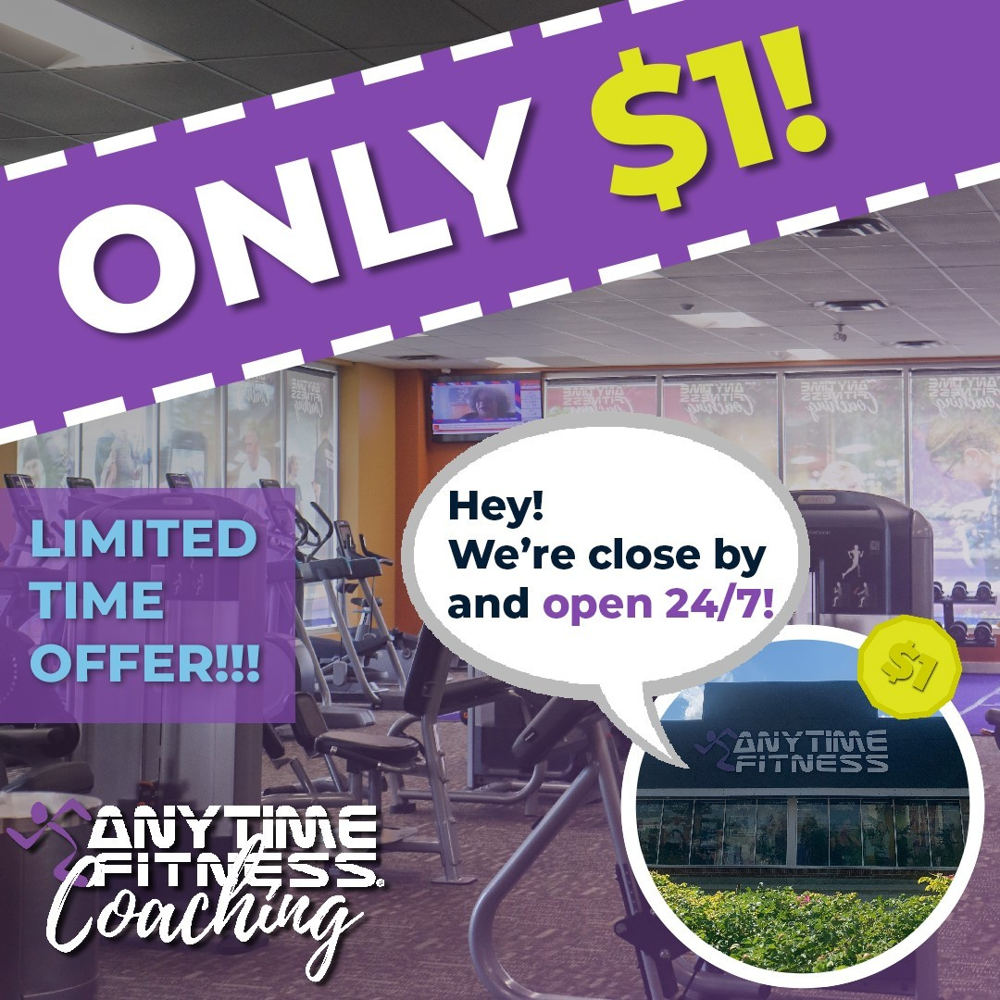
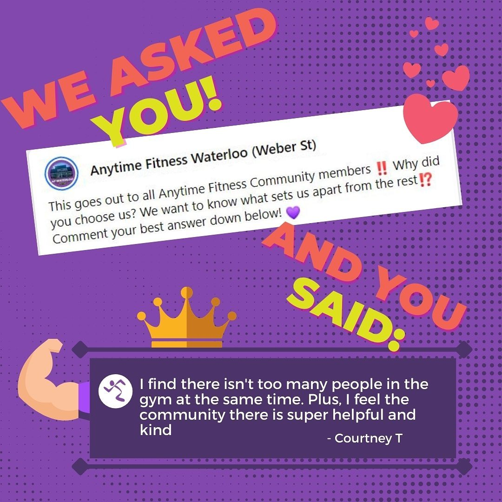

Managing Paid Advertising at Anytime Fitness
My First Introduction to Marketing
I began working at Anytime Fitness in September 2021 as a Marketing Designer. This became my first real introduction to marketing, but because the team was small, my role quickly grew beyond design. What had previously been handled by a larger marketing team became the responsibility of myself and the General Manager, which gave me the opportunity to take on both creative and coordinator responsibilities early in my career.
My work started with designing graphics for social media and paid advertisements across Meta and YouTube. I created organic social media content, paid ad visuals, and an experimental video advertisement for YouTube, while also helping shape campaign messaging around gym promotions, student audiences, and COVID-safe fitness.
Building Targeted Paid Advertising Campaigns
One of my key projects was supporting a Black Friday campaign across multiple Anytime Fitness locations. The strategy required more than one general advertisement. Locations in Waterloo, Kitchener, and Cambridge were close to student populations from the University of Waterloo, Wilfrid Laurier University, and Conestoga College, so I created trendier, student-focused graphics that highlighted the value of the sale.
For locations in more rural Ontario communities, including Tillsonburg, Ingersoll, and New Hamburg, the campaign used a more traditional approach. This allowed the advertising to better match the audiences in each market rather than using the same creative everywhere. By adjusting the tone, visuals, and targeting by location, the campaign was able to generate stronger form submissions and improve conversion performance.





Tracking Performance and Reporting Results
Throughout the campaign, I tracked performance in spreadsheets and measured progress against key performance indicators, including impressions, reach, ad spend, clicks, form conversions, and lead generation. This gave me hands-on experience connecting creative marketing decisions to measurable business outcomes.
I also presented campaign updates during weekly standup meetings with a larger team of around 20 people, including executives and staff from related companies such as Roxton Industries and Driverseat. In these meetings, I spoke on behalf of Anytime Fitness and reported whether the campaigns were on track to meet their targets.
Supporting Sales and Lead Conversion
My role did not stop once leads came in. I also supported the sales team by helping direct text message leads toward booking meetings and gym consultations. This connected the marketing campaign directly to the sales process and helped turn form submissions into real conversations with potential members.
Through targeted advertising, campaign tracking, and sales support, I helped generate over 1,000 qualified leads and contributed to above-target performance for the campaign. This experience taught me how marketing, reporting, and sales alignment work together to drive results.




Marketing During COVID-19
This role also took place during a challenging period for gyms, as COVID-19 restrictions continued to affect fitness businesses. I created content that showed the gym as a safe and sanitary environment, including visuals of staff wearing masks, cleaning procedures, and the use of wipes throughout the facility.
As restrictions changed, I was also involved in a large outreach effort where I helped contact Members of Provincial Parliament across Ontario to advocate for gyms to remain open. This campaign required clear, professional communication during a high-pressure period where closures could have seriously affected the business.
Outcome
What began as a Marketing Designer role grew into a broader paid advertising and marketing coordination position. Through my work at Anytime Fitness, I built experience across graphic design, paid social advertising, YouTube advertising, campaign strategy, KPI tracking, performance reporting, sales support, stakeholder communication, and crisis-era marketing.
This experience gave me the opportunity to combine creativity, analytics, and business communication while contributing to measurable growth, stronger lead generation, and above-target campaign performance across multiple Anytime Fitness locations.